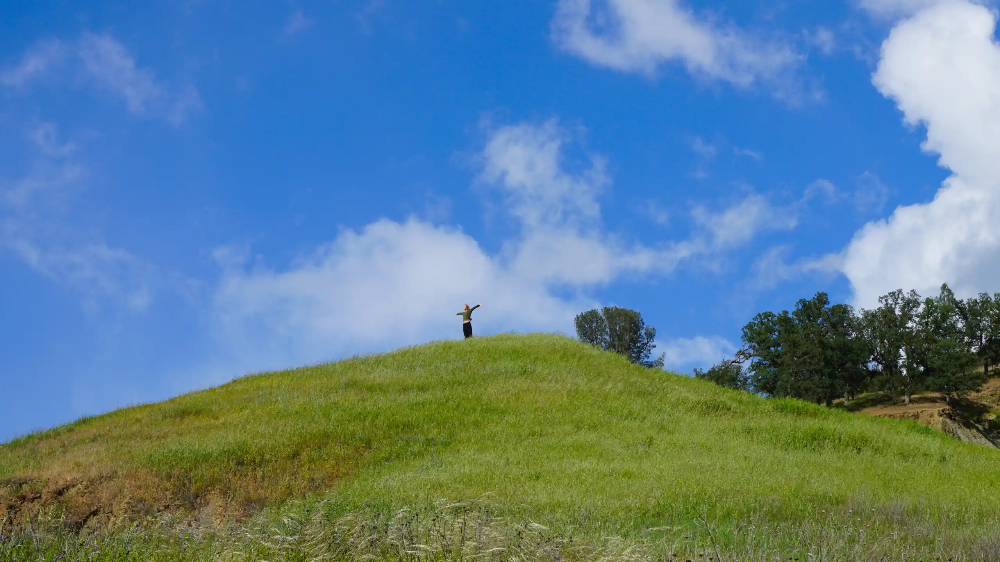
Time in nature quiets the tamed world — and an older, essential self begins to stir. At the Forest Threshold we may remember. The paths forward open. Perhaps the one you find will be uniquely yours, a Way of your particular life.
We train Forest Therapy Guides, people who guide others into deeper relationships with their own hearts and with the living world. Our network of certified trails, places, and spaces are optimized for this essential work. Reconnect. Remember. Return.
This is the practice of entering relationship with a world that has its own voice. We hold the lineage: Relational Forest Therapy. The Way of the Guide. The Language of Invitation. Roots and branches grown over many seasons.
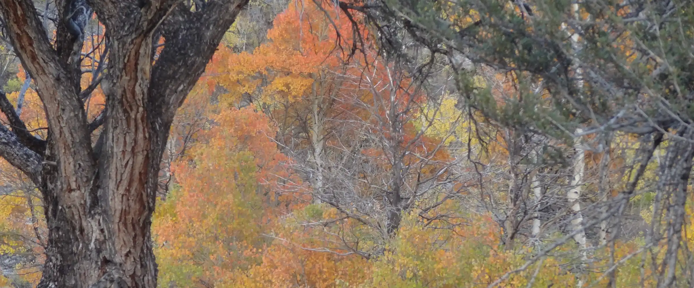
The Forest Threshold is where the call reaches you. ANFT has stood at this threshold with thousands of people just like you — in over 70 nations across the globe, in the wild places, those within and those without. From this threshold, many paths open. We will show you how.
Four academies, and Nature as Medicine — five doors into one living practice.
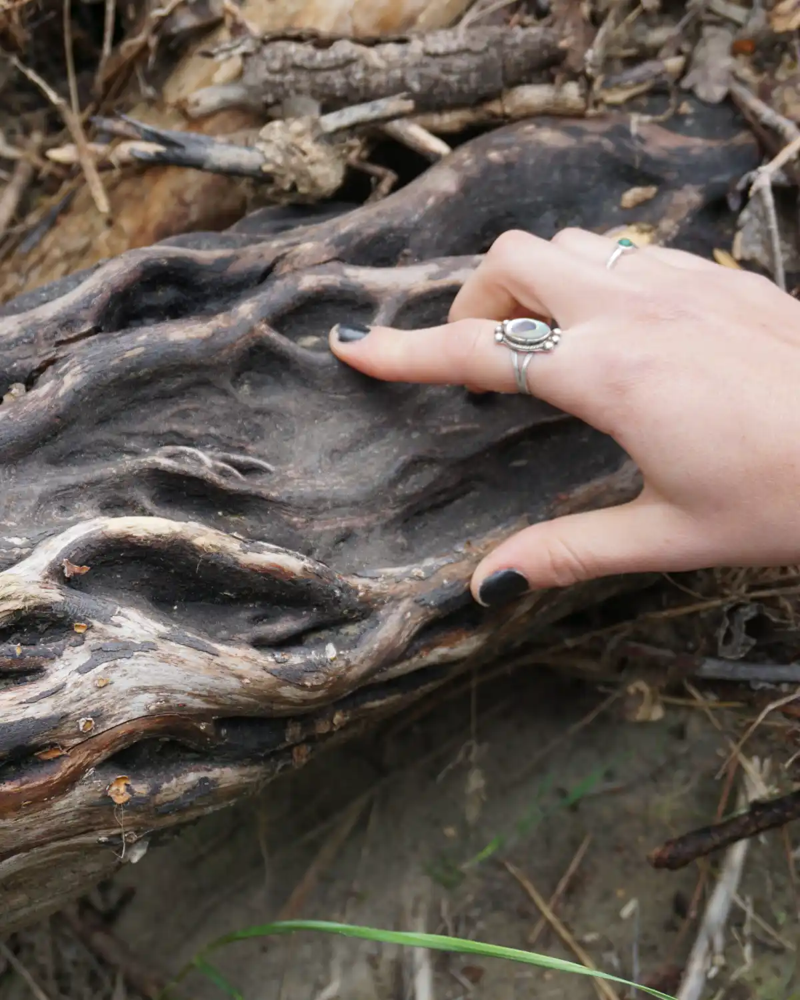
The knowledge and skills of the Way of the Guide.
Explore →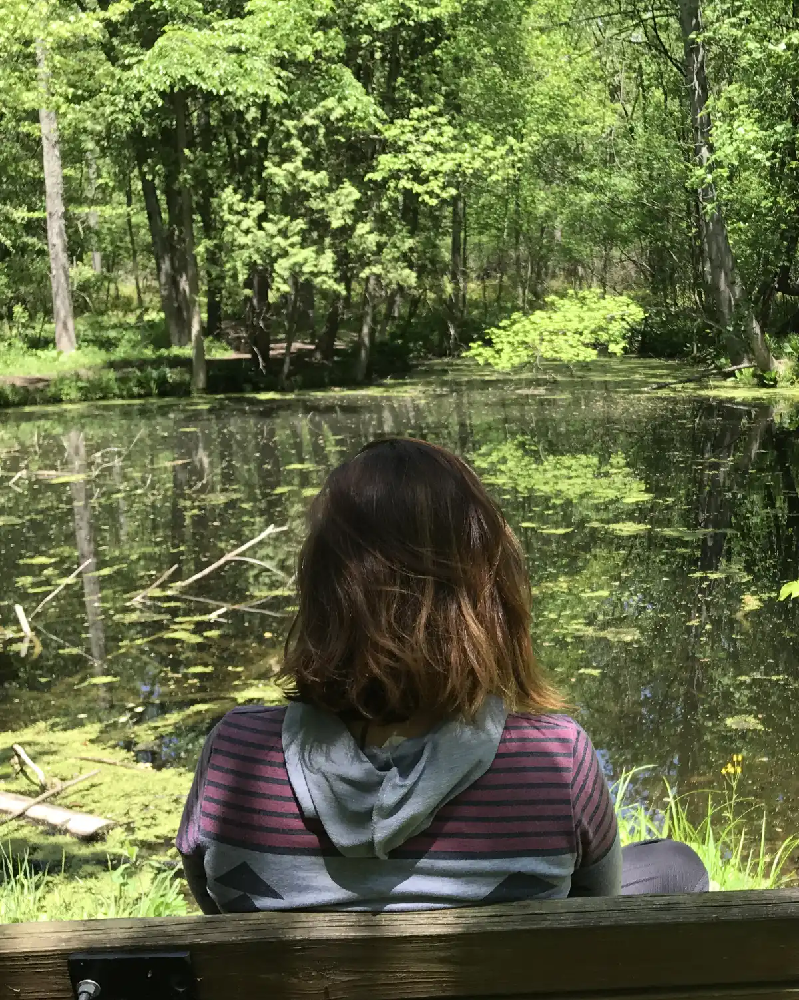
Trails and places optimized for deep connection.
Explore →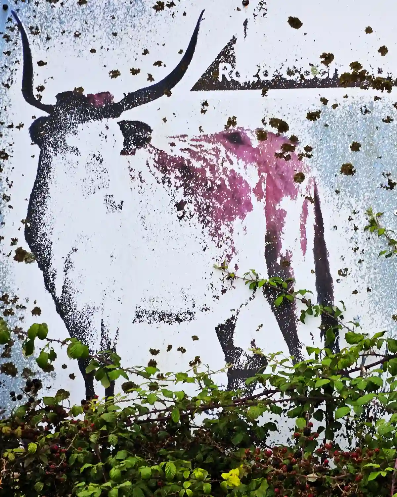
The co-emergence of Self and Opus.
Explore →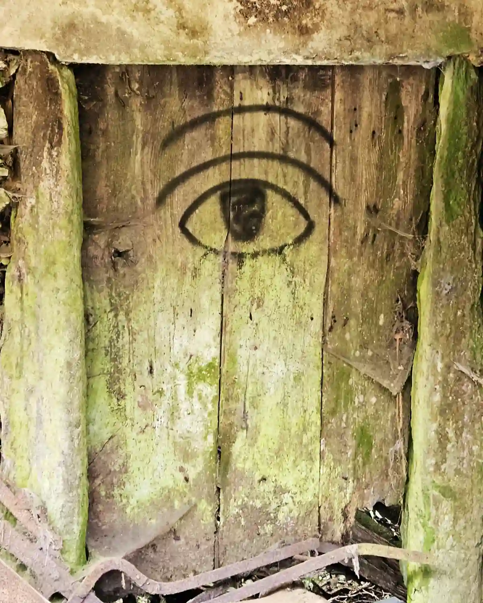
Guide methods woven into profession, art, and life.
Explore →Forest therapy in clinical practice, for licensed professionals.
Explore →Every crossing of the threshold moves through five movements.
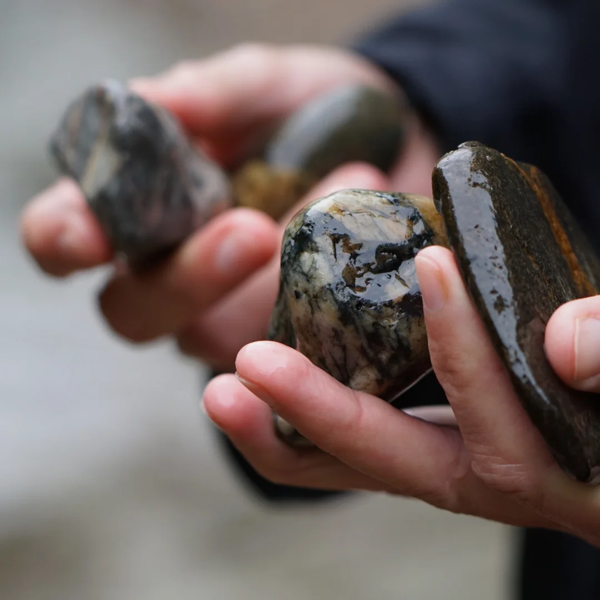
Arrival, and the senses settling into place.
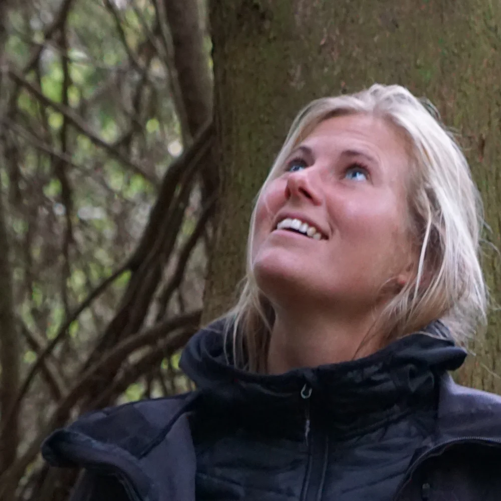
The ideas and lineages beneath the practice.
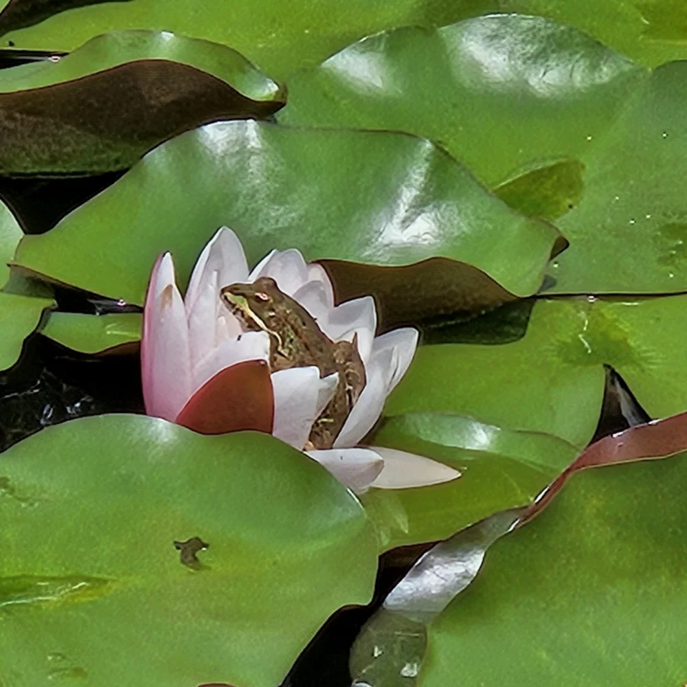
Skills lived on the land, not only studied.
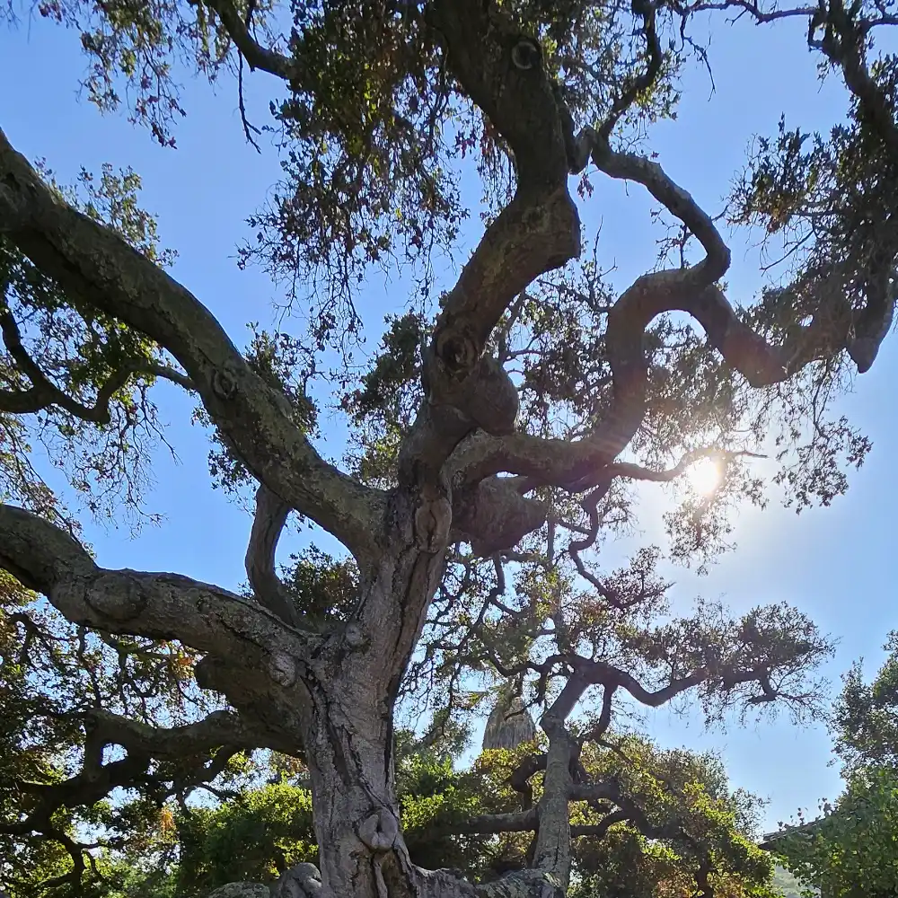
Integration, and the path that calls onward.
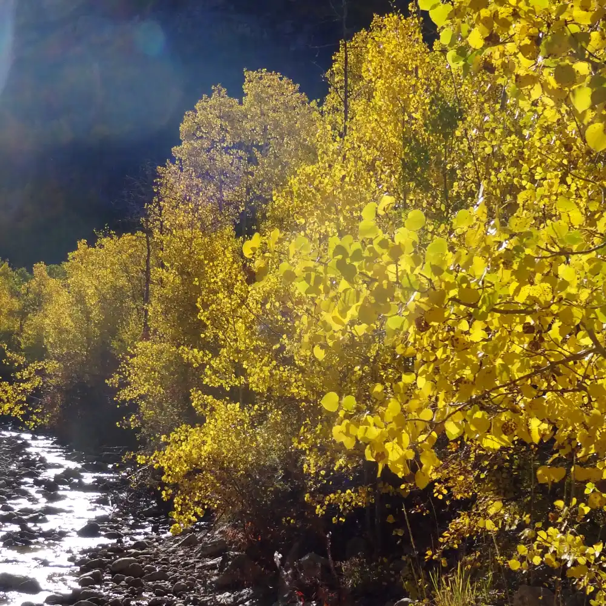
What has been kindled, offered to the world.
The Nature as Medicine practitioner training is accredited by Mass General Brigham, the teaching affiliate of Harvard Medical School, and offers up to 86 continuing education credits for licensed health care professionals.
About Nature as MedicineCohorts begin throughout the year — online and on the land, in many languages.
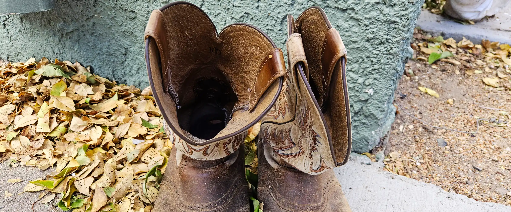
“The training and practicum has changed my life.”
— Maja Pilsar, certified guide